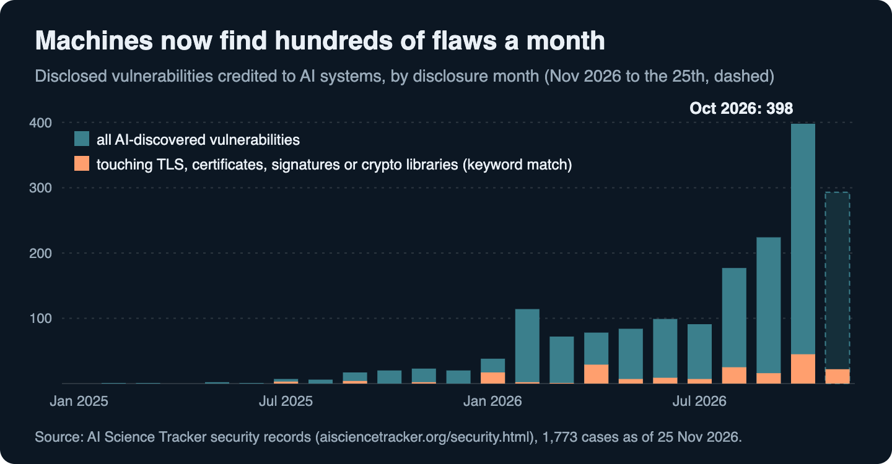
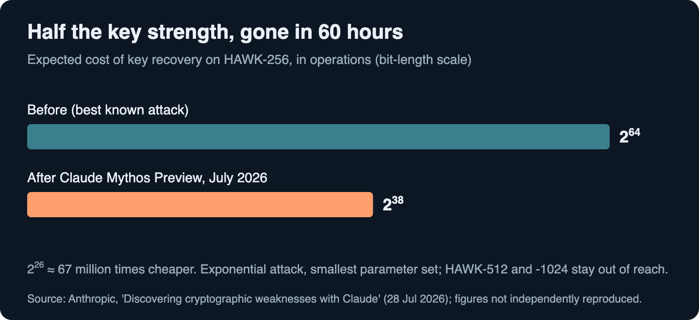
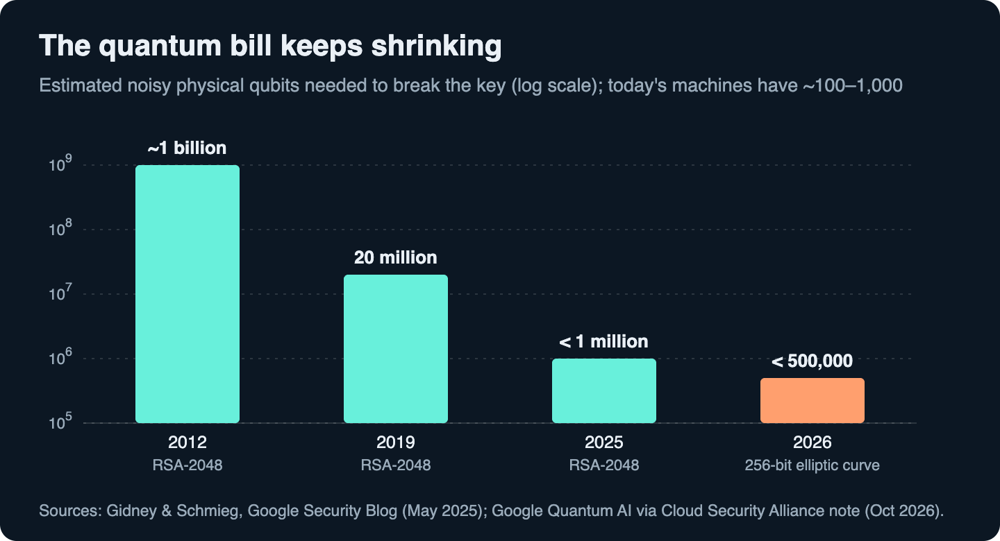

In October I wrote that AI could crack public-key cryptography before quantum computers do. Now there are rumors that the labs already have something. I won't be surprised. What matters is how it breaks.
On 15 October I published If cryptography breaks, Bitcoin is the smaller story. On LinkedIn I put it more bluntly: an AI-driven break of cryptography might arrive sooner than we thought, well before the quantum "Q-day" everyone plans for. A week later came the pile-up of disclosures people started calling Black October.
Some readers told me it was hype. Fair enough. Rumors are not evidence.
Then, on 25 November, Scott Aaronson wrote on his blog that he is "virtually certain, from multiple reliable sources" that Anthropic, OpenAI or both are sitting on one or more results in cryptography. Aaronson is a theoretical computer scientist who spends a good part of his career debunking exaggerated quantum-factoring claims. He is not an easy man to excite.
He was careful. He said he had not seen details and had heard nothing from either lab. He warned that what he heard may have been garbled along the way, and that he knows nothing about ECDSA or Bitcoin. He also said he expects some of these results to break cryptosystems in real use. Versions circulating on X go further, with talk of polynomial-time factoring and an attack on ring-LWE, the lattice problem behind much post-quantum cryptography. None of that is confirmed.
So let me be precise about what I am claiming. I am not claiming RSA is broken today. I am claiming that if it happens soon, it will be the logical consequence of everything else we have watched this year.
Why it would be the logical consequence
Public-key cryptography rests on a handful of unproven beliefs. Nobody has proved that factoring large numbers is hard. Nobody has proved that the discrete logarithm on an elliptic curve is hard. Nobody has proved that the lattice problems behind the new post-quantum standards are hard. We believe it because very clever people tried for decades and failed. That is evidence, not proof.
In other words, the foundations of digital trust are open problems in mathematics. And open problems in mathematics are exactly what AI systems started eating this year.
In my companion post on the math singularity, I show how fast that is happening. AI-enabled mathematics results in my tracker went from two or three a month to a dozen. In a single week of November, the labs released machine-checked proofs connected to the Riemann hypothesis and to VP ≠ VNP, a cousin of P versus NP. Those were problems that very clever people had also tried for decades.
If you had a tireless engine that attacks hard open problems, which ones would you point it at first? The ones that guard trillions of dollars and every secret on the internet. The labs have red teams whose job is to ask exactly that question.
What the machines have already done
None of this is starting from zero. Here is what is on the public record.
AI finds flaws in security code at industrial scale. My tracker lists 1,773 vulnerabilities credited to AI systems. In October 2026 alone, 398 were disclosed, three and a half times February's count. About one in ten touches TLS, certificates, signatures or cryptographic libraries: padding oracles in Bouncy Castle, peer impersonation in the Pion DTLS library, unchecked signatures in Apache Camel.

AI has already weakened real cryptographic designs. In July, Anthropic reported that Claude Mythos Preview found an improved attack on HAWK, a post-quantum signature scheme in NIST's standardization process. The expected cost of recovering a HAWK-256 key fell from about 264 operations to about 238, roughly 67 million times cheaper, after about 60 hours of work. The same report describes an attack on seven-round AES-128 that is 200 to 800 times faster than the best previous one.

Those results deserve their caveats. Full ten-round AES is untouched. The HAWK attack applies to the smallest parameter set, and Léo Ducas, one of its designers, noted that a human reached similar results later the same week, according to Leiden University. But the direction is clear. AI is now a working cryptanalyst, not a chatbot that explains cryptanalysis.
The quantum bill keeps falling too. The other threat, a large quantum computer running Shor's algorithm, has also become cheaper on paper every few years. In 2019 the estimate to break RSA-2048 was 20 million noisy qubits; in 2025 Google's Craig Gidney brought it below one million. In March 2026, Google Quantum AI estimated that 256-bit elliptic-curve keys could fall to fewer than 500,000 physical qubits under its assumptions, according to a Cloud Security Alliance note. Google withheld the circuits and published a zero-knowledge proof instead. That is a sign of how seriously the labs already treat this kind of result.

The two threats are converging. AI may design better quantum circuits, and AI may find classical shortcuts that make quantum computers unnecessary.
It depends how it breaks
"Cryptography breaks" can mean very different things. Here are the levels I would watch, from the one already happening to the one that keeps me up at night.
1. Implementations break. A library forgets to check a signature or leaks timing. This is happening now, at scale, as the chart above shows. The fix is a patch. Painful and expensive, but routine.
2. Parameters and reduced versions break. HAWK-256 and seven-round AES are examples. The fix is bigger keys or a withdrawn candidate. This is the cryptographic process working as designed, only faster.
3. A hardness assumption breaks for classical computers. This is the earthquake. If factoring or the elliptic-curve discrete logarithm fell to a fast classical algorithm, RSA and elliptic-curve cryptography would fall with it. Recorded encrypted traffic could be decrypted. Signatures on software updates, certificates and Bitcoin transactions could be forged. The good news is that the lifeboat is already in the water: the post-quantum standards that governments are rolling out for the quantum threat would protect against this as well.
4. A lattice assumption breaks. This is the scenario behind the ring-LWE rumor, and it is worse in an awkward way: the lifeboat leaks. ML-KEM and ML-DSA, the new standards, are lattice-based. The fallbacks would be hash-based signatures and code-based encryption, which are slower and bulkier but rest on different mathematics. This is why hybrid schemes, which combine a classical and a post-quantum algorithm so that an attacker must break both, look smarter every month.
5. The break exists, and nobody tells us. This is the quiet scenario, and Aaronson's post points to it. You cannot patch mathematics. There is no responsible-disclosure playbook for "the problem is the theorem". A lab that finds a classical attack on a deployed scheme faces a terrible choice, and governments will want to be in the room.
The case for calm, stated fairly
Many serious cryptographers think I am wrong about the timing. Yehuda Lindell, head of cryptography at Coinbase, wrote in October that there is no evidence of any break of decades-old assumptions, and that the best known classical attacks on 256-bit curves still need about 2128 operations (CYBR.SEC.Media). Matthew Green, a cryptographer at Johns Hopkins, put the odds of losing confidence in today's public-key encryption at about 15%, and of losing public-key cryptography entirely at about 1%, according to the same report.
I take that seriously. Hardness assumptions have survived forty years of attack by the best people alive. A fast classical factoring algorithm would be a shock.
But two things have changed. First, "the best people alive tried" no longer bounds what is possible, because the people now have tireless collaborators who try millions of variations. Erdős problems also resisted the best people for decades. Second, factoring is not believed to be NP-hard: a fast algorithm would not contradict any theorem we know. It would only contradict our experience.
What I would do now
Don't wait for the rumor to resolve. The work is the same either way.
- Inventory your cryptography. Know where RSA and elliptic curves live in your systems, including the vendor products and old devices nobody remembers.
- Turn on hybrid post-quantum key exchange. Major browsers and content networks already negotiate it by default; make sure your servers, VPNs and internal services do too.
- Build for agility. Make it a configuration change, not a rewrite, to swap an algorithm. If a lattice scheme falls, you will want to move again.
- Shorten the life of secrets. Assume recorded traffic will one day be readable. Rotate keys and keep forward secrecy everywhere.
- Re-read your deadlines. U.S. federal rules point to 2030–2031 for migrating away from vulnerable algorithms, and NIST's draft guidance to deprecation by 2030 and a ban by 2035. Those dates assume a quantum timeline. An AI break would not respect them.
A logical consequence
In October I wrote that a cryptographic failure would hurt society far beyond Bitcoin: medical records, private messages, software updates, the signatures we use to decide whom to trust. That is still the stake.
What has changed in six weeks is the probability. Machines are now proving theorems that defeated generations of mathematicians, and finding flaws in security code by the hundreds every month. The locks on the internet are made of mathematics. AI is doing mathematics now.
If one of those locks opens soon, I won't be surprised. I will want to know which one, and whether we had already built the next door.